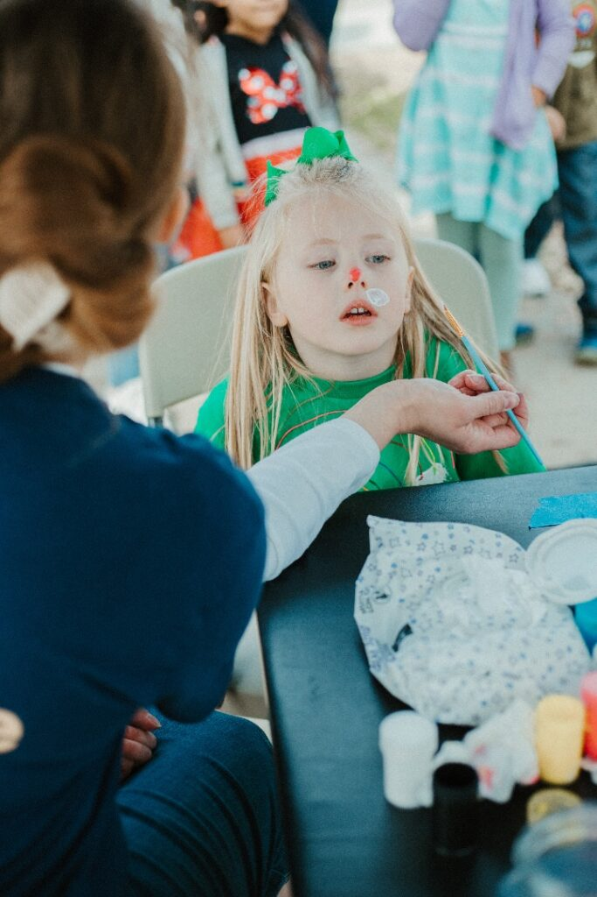
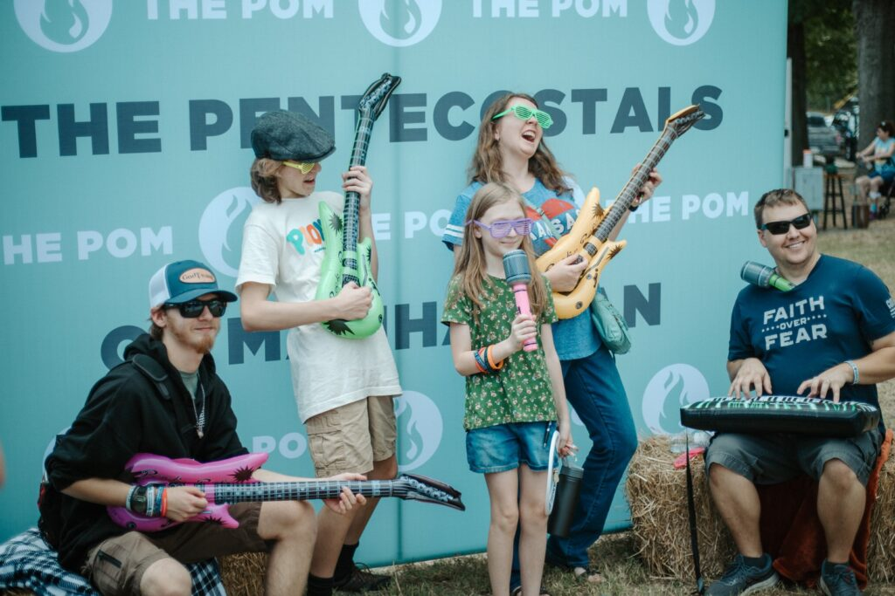
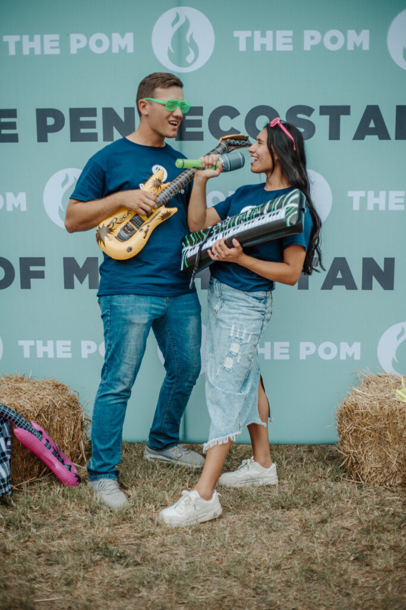
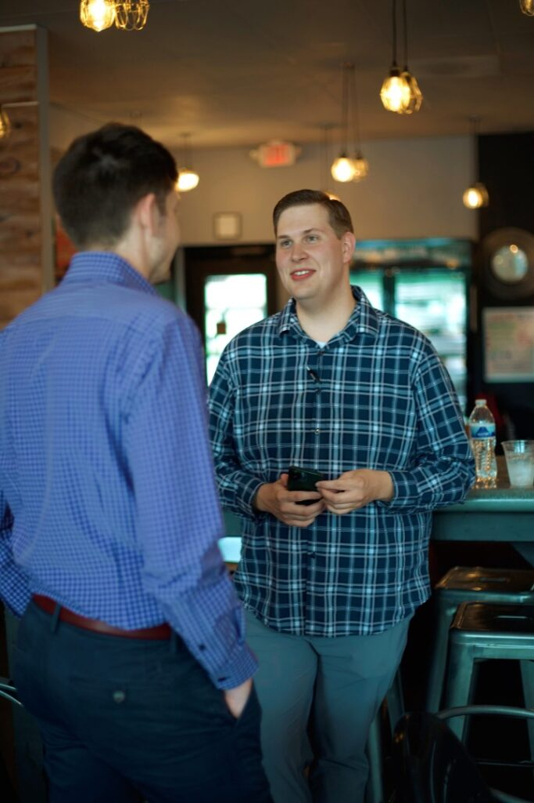
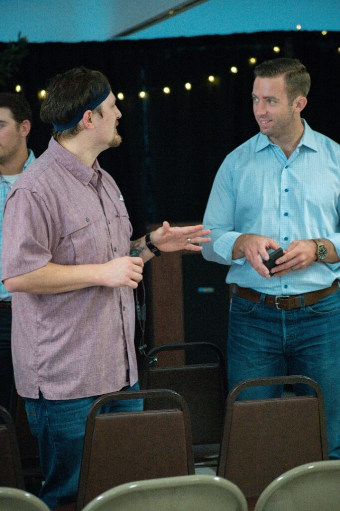
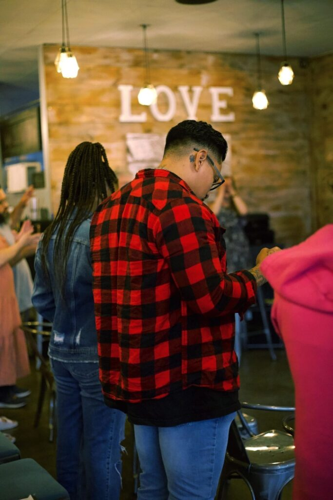

Ages 2–11 · Nursery available
POM Kids.
Fun, age-specific ministry with Bible teaching, music, creativity, and leaders who care about helping children know Jesus.

Fun, age-specific ministry with Bible teaching, music, creativity, and leaders who care about helping children know Jesus.

A positive peer environment with practical teaching for real life, room for fun, and a strong expectation that young people can live fully for Jesus.

A place to build friendship, serve, ask real questions, and discover God’s wisdom during years filled with major decisions.

Strong families help build strong communities. POM wants faith to shape Monday through Saturday, not only what happens in a Sunday service.

Food, coffee, games, outdoor activities, and shared interests give people a reason to keep building real friendships beyond the church service.

Life Groups gather in homes, coffee shops, and everyday spaces to study Scripture together. Whether you have followed Jesus for years or are simply asking questions, there is a seat at the table.
Ask about a Bible study ↗